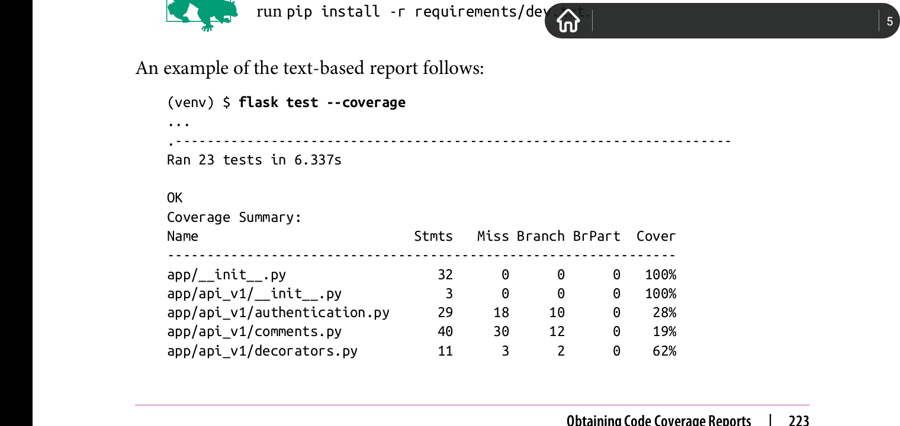

Chapter 15: Testing
Overview
编写单元测试有两个好处。当实现新功能后，单元测试可以保证新的代码按照我们期望的方式运行。当然也可以手动编写测试代码，但是自动测试节省时间和精力，因为他们可以被多次重复。
更重要的是，每次调整现有程序代码时，针对该部分已有代码的单元测试可以用来确认调整后的代码对已有代码没有回归(regresions)影响。也就是说，新代码不会影响到旧代码的正常运行。
在很早时候， flask就已经将支持数据库模型的单元测试集成为了flask的一部分。因此可以在运行app上下文之外很轻易的测试数据库模型类。通过flask内置的对model有效的单元测试支持，至少我们可以毫不费力的确信app的数据库功能是符合我们预期的以及运行正常的。
本章将提升和扩展单元测试的应用范畴,将app的其他部分也包含进单元测试里。
Obtaining Code Coverage Reports
拥有一套测试组件很重要，但是了解该组件的好坏同样重要。Code Coverage工具用于测量app的哪些部分被单元测试测试过了，他也会提供一份详细的报告用来表明程序哪些部分还没有被测试到。这份报告相当有价值，因为他可以指导我们将精力用到最需要被测试的代码中。
可以使用python优秀的 coverage包来完成该目标。
(venv) $ pip install coverage
该工具可以以命令行的方式调用开启了code coverage 功能的python app,它也可以通过脚本的方式来访问它的coverage engine.为了让该工具可以集成到 flask test命令中，我们可以以chapter 7一样的方式来添加一个--coverage选项，用于手动开启coverage功能。以下是该选项的实现:
# flasky.py: coverage metrics
import os
import sys
import click
#以下全局域代码
COV = None
if os.environ.get('FLASK_COVERAGE'):
import coverage
COV = coverage.coverage(branch=True, include='app/*')
COV.start()
#....
@app.cli.command()
@click.option('--coverage/--no-coverage', default=False)
def test(coverage): # 当指定--coverge选项时，coverage值为True, 指定--no-coverage选项时，值为False
"""Run the unit test."""
if coverage and not os.environ.get('FLASK_COVERAGE'): #通过在命令行中开启或关闭
os.environ['FLASK_COVERAGE'] = '1'
os.execvp(sys.executable, [sys.executable] + sys.argv) # fork一个进程来重新执行该脚本文件flasky.py
#主进程继续往后执行代码
import unittest
tests = unittest.TestLoader().discover('tests')
unittest.TextTestRunner(verbosity=2).run(tests)
if COV: #主进程不执行该代码块，只执行普通测试，子进程执行code coverage.
COV.stop()
COV.save()
print('Coverage Summary:')
COV.report()
basedir = os.path.abspath(os.path.dirname(__file__))
covdir = os.path.join(basedir, 'tmp/coverage")
COV.html_report(directory=covdir) #将code coverge report的html版本写入文件
print('HTML version: file://%S/index.html' % covdir)
COV.erase()
可以通过在flask test命令中指定--coverage选项来开启code coverage支持。为了将boolean值类型的选项添加到test自定义命令中，我们在这里使用了click.option装饰器。Click然后将代表boolean值的flag传递到函数参数列表中。
但是在flasky.py脚本里集成code coverage支持是存在一些问题的。当test函数接受到--coverge选项指定的值时，激活code coverage功能已经太晚，因为那个时候所有在全局域中的代码(指的是所有飞函数体中的代码)已经执行完了。因此，为了code coverage能在恰当时间执行，flasky.py脚本在设置完FLASK_COVERAGE环境变量后，flask.py脚本会重新运行自己，执行全局域中的代码，也就是为COV变量实例化的那一段代码。在脚本第二次运行时，脚本顶部的代码检测到环境变量FLASK_COVERAGE被设置后，会在该脚本所有导入语句执行前打开code coverage支持。
coveage.coverage()函数用于激活coverage 引擎。branch=True选项用于激活分支情况分析(branch coverage analysis)，该功能除了可以追踪哪些代码行执行了以外，还检测每一个True or False代表的情况都有可能发生的条件语句是否都执行到了。而include选项用于限制coce coverage 分析作用到的文件范围，在这里，只有app下的代码需要被code ceveraged.而如果不包含include选项的话，那么在virtual environ里安装的所有包，以及测试代码本身全部都会被code coveraged.最终的report输出就noise了。
当所有测试执行完后， test()函数会在console上输出coverage report,以及将html版本的report写入磁盘。在该html版本中，其用有颜色的字体区分哪些代码code coverged了，哪些没有。
上述report显示了overall coverage为45%,这不算太糟糕，但也不是很好。到目前为止，所有的model类都被单元测试过，总共236行代码，其中79%的代码被测试到了。很显然，main和auth蓝图里的views.py脚本和api_v1蓝图里的视图函数单元测试覆盖率极低。当然，这些coverage report并不代表项目里有多少bug-free代码，因为还有其他影响因素，比如测试的质量等等。
有了coverage report，我们可以很轻易的决定哪些代码应该接受新测试以提高code coverage.但是，不幸的是，app的其他部分的测试并不会像数据库模型那样容易实现。以下两节将介绍高级测试策略，而这可以应用到视图函数，表单，以及模版测试中。
The Flask Test Client
一些app的其他部分代码十分依赖于运行时app所创造的环境。比如，你不能仅仅调用视图函数就想去测试他，因为这些视图函数需要访问诸如request或者session之类的flask上下文变量，需要接受由POST 请求提供的表单数据，也有可能要求一个已登陆的用户。总之，视图函数只能运行在request环境和运行时app环境下。
flask自身装备了测试客户端(test client)来解决上述问题，至少可以解决大部分。测试客户端模拟了app运行时所需要的环境，这样用户测试可以像普通客户端一样发送请求。
当处于测试客户端环境下时，视图函数是分不出这是模拟的上下文环境。总之，app和视图函数会像往常一样运行。而视图函数返回的响应，也会被正确转发到测试客户端这儿，这样我们就可以对返回的响应检测其正确性。
Testing Web Applications
以下代码展示了测试客户端的使用:
# tests/test_client.py: framework for tests using the flask test client
import unittest
from app import create_app, db
from app.models import User, Role
class FlaskClientTestCase(unittest.TestCase):
def setUp(self):
self.app = create_app('testing')
self.app_context = self.app.app_context()
self.app_context.push()
db.create_all()
Role.insert_roles()
self.client = self.app.test_client(use_cookies=True)
def tearDown(self):
db.session.remove()
db.drop_all()
self.app_context.pop()
def test_home_page(self):
response = self.client.get('/')
self.assertEqual(response.status_code, 200)
self.assertTrue('Stranger' in response.get_data(as_text=True))
和tests/test_basics.py脚本相比，上述测试使用了self.ciient实例变量，其是一个flask测试客户端对象。该对象暴露了一些可以将请求发送到app中的方法。使用选项use_cookies所创建的测试客户端，可以像普通浏览器那样接受和转发cookies，这样在请求间共享数据且依赖于该cookies的功能可以正常使用。重要的是，测试客户端能让我们使用存储在cookies里的用户会话。
test_home_page()函数只是测试客户端一个小小的使用展示。本例中，其模拟请求了app的主页网址。测试客户端提供的get()函数返回一个由视图函数发送的响应对象。为了检测测试是否成功，我们可以验证响应对象的响应码是否正确，响应体中是否包含了主页中展示给匿名用户的hello stranger信息中的Stranger字符串，而这个搜索过程可以使用get_data()函数实现。注意，get_data()函数默认返回的是比特数组，通过指定as_text=True参数，来获取易读的字符串信息。
测试客户端也可以使用post()方法来发送带有表单数据的POST，但是发送表单数据有点复杂。在第四章提到过，所有由flask-wtf产生的表单都有一个带有CSRF令牌的隐藏字段，而这个字段也需要随同表单一块被发送。而测试请求如果想发送CSRF令牌的话，必须请求表单页面，解析并提取出由表单页面返回的html响应中包含的CSRF令牌，这样才可以将令牌随表单数据一块发送。为了使测试简单点，最好在测试配置类里禁用CSRF保护，或者自己使用html解析库实现。以下是更改配置的代码:
# config.py: disabling CSRF protection in the tesing configuration class TestingConfig(Config): #.... WTF_CSRF_PROTECTION = False
以下展示了一个更高级的测试，该测试模拟了新用户的注册，登陆，使用confirmation令牌来验证账户，以及账户登出。
# tests/test_client.py: simulation of a new user workflow with the flask test client
class FlaskClientTestCase(unittest.TestCase):
#....
def test_register_and_login(self):
# register a new account
response = self.client.post('/auth/register', data={
'email': '1558911620@qq.com',
'username': 'ml',
'password': 'password',
'password2': 'password'
})
self.assertEqual(response.status_code, 302)
# log in with the new account
response = self.client.post('/auth/login', data={
'email': '1558911620@qq.com',
'password': 'password'
}, follow_redirects=True)
self.assertEqual(response.status_code, 200)
self.assertTrue(re.search('Hello,\s+ml', response.get_data(as_text=True)))
self.assertTrue(
'You have not confirmed your account yet' in response.get_data(
as_text=True))
# send a confirmation token
user = User.query.filter_by(email='1558911620@qq.com').first()
token = user.generate_confirmation_token()
response = self.client.get('/auth/confirm/{}'.format(token), follow_redirects=True)
user.confirm(token)
self.assertEqual(response.status_code, 200)
self.assertTrue(
'You have confirmed your account' in response.get_data(
as_text=True))
# log out
response = self.client.get('/auth/logout', follow_redirects=True)
self.assertEqual(response.status_code, 200)
self.assertTrue('You have been logged out' in response.get_data(as_text=True))
上述测试发送表单提交到注册页面。而post()函数的data参数是一个包含了表单字段的字典，该字典里使用的键名必须和表单类里定义的字段变量的名字相同。因为CSRF保护已经在TestConfig类里关闭了，所以发送的表单数据不需要包含CSRF令牌。
/auth/register路由可以返回两种类型的响应。如果表单数据有效，则会重定向用户到登陆页面。如果注册失败，则响应会再次渲染注册页面，包含任何error message。为了验证注册是否成功，测试验证了响应的响应码是否是302，其意味着重定向。
第二个测试使用刚才注册成功后的邮箱名和密码发送登陆请求，这是通过发送POST请求到/auth/login路由实现的。这里的post()方法中还额外使用了follow_redirects=True参数，这使得test client表现的和普通浏览器一样，可以自动请求重定向中包含的重定向网址。使用了该参数后，最终返回的状态码就不是302了，而是执行重定向后的新网址，200状态码。
登陆成功后，会返回一个使用用户名来欢迎新用户的页面，该页面也显示了当前用户的账户需要激活的信息。有两个assert语句来验证返回的页面是否是正确的。注意这里使用re来匹配欢迎信息的规则。
下一步是验证账户，这会带来点麻烦。验证url是在注册期间通过邮件发送给用户的，因此在测试期间不存在容易的办法来访问该url。上述测试中提供的解决方案是绕过注册期间产生的令牌，相反直接使用User模型提供的方法来手动获取令牌。另外一种解决方案是直接解析验证邮件，从而提取出令牌。
一旦我们获取到令牌，下一步就是模拟用户点击邮件中的confirmation token URL。这通过向验证令牌URL发送GET请求。该请求的响应是指向主页的重定向，但是，一旦我们指定follow_redirects=True选项，那么测试客户端就会自动请求重定向后的网址，并返回最终的响应。通过验证该请求中是否包含欢迎信息，以及通知用户账户验证成功的信息来确认最终响应的正确性。
最后一步是请求登出网址，通过验证响应中是否包含正确的flashed message来判断执行是否成功。
Testing Web Services
flask 测试客户端也可以用来测试RESTful网络服务。以下包含两个测试的单元测试类展示了其使用:
# tests/test_api.py: RESTful API testing with Flask test client
class APITestCase(unittest.TestCase):
#...
def get_api_headers(self, username, password):
return {
'Authorization':
'Basic ' + b64encode( #注意Basic后面的空格
(username + ':' + password).encode('utf-8')).decode('utf-8'),
'Accept': 'application/json',
'Content-Type': 'application/json'
}
def test_no_auth(self):
response = self.client.get(url_for('api.get_posts'),
content_type='application/json')
self.assertTrue(response.status_code, 401)
def test_posts(self):
# add a user
r = Role.query.filter_by(name='User').first()
self.assertIsNotNone(r)
u = User(email='1558911620@qq.com', password='cat', confirmed=True, role=r)
db.session.add(u)
db.session.commit()
# write a post
response = self.client.post(
'/api/v1/posts/',
headers=self.get_api_headers('1558911620@qq.com', 'cat'),
data=json.dumps({'body': 'body of the *blog* post'}))
self.assertEqual(response.status_code, 201)
url = response.headers.get('Location')
self.assertIsNotNone(url)
# get the new post
response = self.client.get(
url,
headers=self.get_api_headers('1558911620@qq.com', 'cat'))
self.assertEqual(response.status_code, 200)
json_response = json.loads(response.get_data(as_text=True))
self.assertEqual('http://localhost' + json_response['url'], url)
self.assertEqual(json_response['body'], 'body of the *blog* post')
self.assertEqual(json_response['body_html'], '<p>body of the <em>blog</em> post</p>')
上述测试中省略掉的setUp()和tearDown()方法和普通测试中用到的方法一样，只不过在 api测试里不需要开启cookies支持，因为api用不到它。get_api_headers()方法是一个帮助函数，用于获取随大多数api请求一起发送的通用headers信息。这些headers包括验证令牌和与MIME类型相关的头部信息。
test_no_auth()测试用来验证当发送的api请求不包含验证令牌时会返回错误响应代码401。test_posts()测试首先在数据库中插入新用户，然后使用RESTful API来插入新博客，然后读取刚插入的博客body。任何将数据保存在body中的请求，必须使用json.dumps()方法来编码该数据，因为flask 测试客户端不会自动将数据编码成json格式。相应的，返回的响应body中保存了json格式的数据，在处理这些数据之前，必须使用json.loads()方法来解码这些数据。
End-to-End Testing with Selenium
flask测试客户端并不能够完全模拟运行时app的环境。比如，任何要求在客户端运行javascript的网站就模拟不了，因为测试客户端接受到的包含在响应中的javascript代码会被视为文本，而不会被执行。
当测试需要完整的环境时，除了使用真实的浏览器来访问网络服务器上的网站之外，没有其他的办法可以实现。幸运的是，大多数浏览器都支持自动化操作。Selenium工具可以用来自动化操作三大主要操作系统上的大多数浏览器。
可以通过如下代码安装:
(venv) $ pip install selenium
使用selenium，除了需要安装浏览器之外，还得安装相应的driver。绝大多数浏览器都有相应的driver，因此，app可以在多个浏览器上使用预制的成测试框架。本例中，将会使用google chrome浏览器和对应的chromedriver。安装driver，请google。
使用selenium来测试需要网站部署在网络服务器上，而且该服务器必须监听真实的HTTP请求。本例中，将会在运行在后台线程上的自带的开发版服务器上启动app,同时，所有的测试用例将会运行在主线程中。在测试控制之下，由Selenium激活网络浏览器，访问app来执行特定的请求操作。
上述方案存在一个问题:在所有测试结束后，flask开发服务器需要自动停止，因此那些后台任务比如code coverage可以完成它们的任务。由Werkzeug提供的开发版服务器有一个shutdown选项，但是因为该服务器现在是隔离运行在它自己的线程中，因此我们只能给该服务器发送一个普通的HTTP请求来要求它shut down。以下是服务器shut down的实现:
# app/main/views.py: server shutdown route
@main.route('/shutdown')
def server_shutdown():
if not current_app.testing:
abort(404)
shutdown = request.environ.get('werkzeug.server.shutdown')
if not shutdown:
abort(500)
shutdown()
return 'Shutting down...'
shutdown路由只会运行在测试模式，尝试在其他模式中调用该路由会导致返回404错误响应码。而实际的shutdown过程使用werkzeug暴露在environ上的shutdown函数实现。调用该函数并从请求中返回后，开发版服务器会优雅地shut down。
以下是使用selenium实现的测试用例:
# tests/test_selenium.py: framework for tests using selenium
from selenium import webdriver
class SeleniumTestCase(unittest.TestCase):
client = None
@classmethod
def setUpClass(cls):
# start Chrome
options = webdriver.ChromeOptions()
options.add_argument('headless')
try:
cls.client = webdriver.Chrome(chrome_options=options)
except:
pass
# skip these tests if the browser could not be started
if cls.client:
# create the application
cls.app = create_app('testing')
cls.app_context = cls.app.app_context()
cls.app_context.push()
# suppress logging to keep unittest output clean
import logging
logger = logging.getLogger('werkzeug')
logger.setLevel('ERROR')
# create the database and populate with some fake data
db.create_all()
Role.insert_roles()
fake.users(10)
fake.posts(10)
# add an administrator user
admin_role = Role.query.filter_by(permissions=0xff).first()
admin = User(email='1558911620@qq.com', username='ml', password='cat', role=admin_role, confirmed=True)
db.session.add(admin)
db.session.commit()
# start the flask server in a thread
cls.server_thread = threading.Thread(
target=cls.app.run, kwargs={
'debug': 'false',
'use_reloader': False,
'use_debugger': False})
cls.server_thread.start()
@classmethod
def tearDownClass(cls):
if cls.client:
# stop the flask server and the browser
cls.client.get('http://localhost:5000/shutdown')
cls.client.quit()
cls.server_thread.join()
# destroy database
db.drop_all()
db.session.remove()
# remove the application context
cls.app_context.pop()
def setUp(self):
if not self.client:
self.skipTest('Web browser not avalible')
def tearDown(self):
pass
setUpClass()和tearDownClass()方法会在该测试类执行之后，before and after all tests。setup函数会使用selenium的webdriver api来实例化Chrome实例，创建app实例，以及创建数据库和使用虚假数据填充该数据库。app实例会使用app.run()方法在线程中激活。一旦app接受到/shutdown请求，就会终止运行服务器的后台线程。然后关闭浏览器以及移除测试数据库。
在引入基于Click的Flask命令行接口之前，开发者只能在app的主脚本文件中调用app.run()方法来启动开发服务器，或者使用第三方扩展比如Flask-Script来激活。尽管app.run()已经被flask run命令行取代，但是app.run()没有被废弃。后续你将看到如何在复杂的单元测试中使用app.run()方法。
selenium除了支持chrome之外，还支持其他浏览器，具体请谷歌。
如果selenium在setUpClass()F方法中无法启动网络浏览器的话，在所有测试之前调用的setUp()方法会跳过所有的测试。以下是使用selenium的测试用例实现:
# tests/test_selenium.py: example selenium unit test
class SeleniumTestCase(unittest.TestCase):
# ....
def test_admin_home_page(self):
# navigate to home page
self.client.get('http://localhost:5000/')
self.assertTrue(re.search('Hello,Stranger', self.client.page_source))
# navigate to login page
self.client.find_element_by_link_text('Log In').click()
self.assertIn('<h1>Login</h1>', self.client.page_source)
# log in
self.client.find_element_by_name('email').\
send_keys('1558911620@qq.com')
self.client.find_element_by_name('password').send_keys('cat')
self.client.find_element_by_name('submit').click()
self.assertTrue(re.search('Hello,ml', self.client.page_source))
# navigate to the user's profile page
self.client.find_element_by_link_text('Profile').cick()
self.assertIn('<h1>ml</h1>', self.client.page_source)
上述测试使用在setUpClass()方法中创建的管理员账户来登陆app，然后打开用户配置页面。注意flask测试客户端中在不同测试领域中用到的测试方法的差异。当使用selenium来测试时，测试给浏览器发送命令而不是直接和网站进行交互。这些命令模拟了一个真实人使用鼠标和键盘来使用浏览器的动作。
测试首先使用get()来请求网站主页。而在selenium激活的浏览器中，主页的网址会被自动填充到地址栏。我们可以通过检测返回的响应源码中是否包含欢迎用户的字符串来判断上述过程是否执行成功。
登陆网站，我们可以使用find_element_by_name()来定位email和password表单字段，并使用send_keys()将合适的文本信息写入到这些表单字段中。通过click()来点击submit按钮来完成表单提交。我们可以检查响应源码中是否包含特定的用户欢迎信息来判断登陆操作是否执行成功。现在浏览器页面停留在网站主页。
测试最后一步是定位导航栏中的Profile链接，并点击它。通过检查源码中是否包含用户名来判断加载用户配置页面是否成功。
当你使用flask test命令来运行上述测试时，输出结果和普通测试没有什么区别。test_admin_home_page()单元测试会运行在headless模式下的Chrome实例中，并在该实例上执行所有指定的操作。如果你想在真实的浏览器中看到上述操作的执行过程，可以注解掉options.add_argument('headless')代码行，这样selenium会创建一个真实的Chrome窗口。
Is It Worth It?
你可能会问有必要使用flask测试客户端和selenium吗?这个问题复杂，，没有一个简单的答案。
无论你是否喜欢，app都必须受到测试。如果你不想自己测试，那么你的用户会成为最终的测试者，他们会发现bug，然后你会火急火燎的修复bug。那些简单和集中的测试，比如数据库模型测试，和在运行时app环境之外执行的其他测试，都必须运行过，因为它们测试负载低，而且是网站运行所必须的核心功能，必须保证他们能正常运行。
对于那些端对端测试，比如使用flask测试客户端和selenium，有时候是必须的，但是随着网站体量增大，编写这类测试的代码也会变得越来越复杂，因此应该将这类测试用于那些无法在隔离环境下测试的功能。必须将网站项目结构设计好，这样业务逻辑可以存在于独立于运行时app环境的模块中，因此，测试业务逻辑将变得简单。视图函数中的代码必须尽量简单，它的存在只能是接受请求，然后执行特定的操作。而这些操作可以是定义在其它类中的方法，或者是其模块中封装了业务逻辑的函数。
因此，测试是必须的，但是如何设计测试策略以及编写充分利用这些策略的测试代码是很重要的。